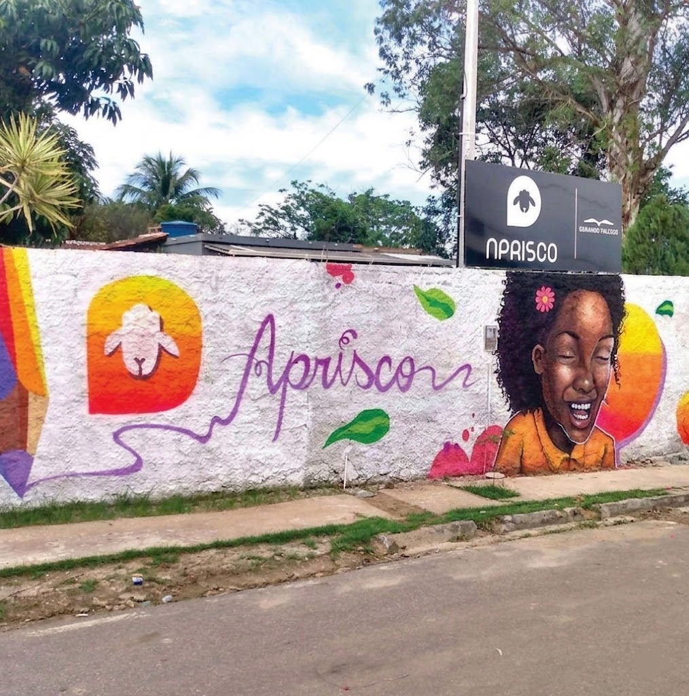
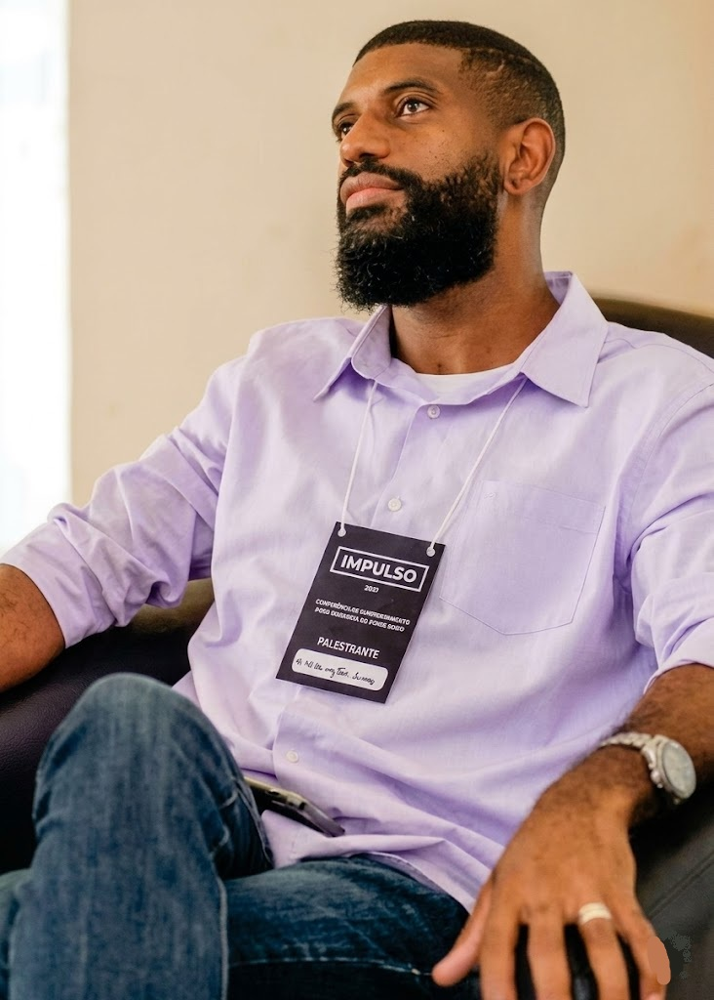
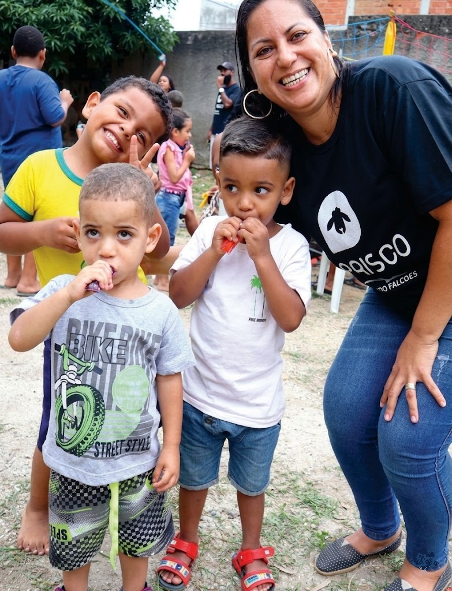

Mais do que caridade, entregamos desenvolvimento integral com resultados auditáveis para Itaguaí e região.
O Aprisco nasceu em 2014 de um café da manhã numa praça pública em Itaguaí. Fundado por Washington Tadeu da Silva — ex-dependente químico, formado em missões, especialista em transformação comunitária — a associação partiu do zero para se tornar uma das organizações sociais mais auditadas e reconhecidas do município.
Hoje operamos em 3 comunidades (Morro do Sase, Morro do Carvão e Comunidade Weda) e expandimos nossa atuação para Mangaratiba. Somos parceiros homologados da Rede Gerando Falcões e referência em gestão de impacto mensurável no Estado do Rio de Janeiro.
"A palavra aprisco significa abrigo. E é exatamente isso que entregamos: não caridade, mas estrutura. Não ajuda emergencial, mas desenvolvimento integral com resultados auditáveis."


Washington Tadeu da Silva, 45 anos, cresceu em Itaguaí sabendo o que é escassez. Aos 13 anos entrou no ciclo da dependência química. Aos 22, saiu. Formou-se no ensino superior em 2010, especializou-se em missões sociais e passou anos dentro de escolas, penitenciárias e hospitais entendendo como o sistema falha — e onde pode acertar.
Entre 2005 e 2014, coordenou a implantação de 19 bandas musicais na rede municipal de ensino de Itaguaí, atendendo mais de 3.500 alunos. Esse trabalho virou O Aprisco: uma organização que usa a mesma lógica de disciplina, talento e método que formou músicos para transformar a realidade de comunidades inteiras.
De dependente químico anônimo a empreendedor social reconhecido pela Assembleia Legislativa do Estado do Rio de Janeiro — Washington é a prova viva do que O Aprisco ensina: que o potencial existe, e precisa de estrutura para emergir.
Transformar vidas por meio da cultura, educação, esporte e inclusão produtiva — entregando resultados mensuráveis para crianças, jovens e adultos em situação de vulnerabilidade em Itaguaí e região.
Ser a organização de referência em desenvolvimento humano e social no município de Itaguaí, reconhecida por parceiros corporativos e doadores por sua transparência, governança e impacto comprovado.

Atuação presente nos bairros Morro do Sase, Morro do Carvão e Comunidade Weda, situados no município de Itaguaí/RJ; e também no município de Mangaratiba, no bairro Praia do Saco.
Crianças, jovens e adultos em situação de vulnerabilidade. Sendo:
* Clique nos marcadores para ver a localização detalhada no Google Maps.